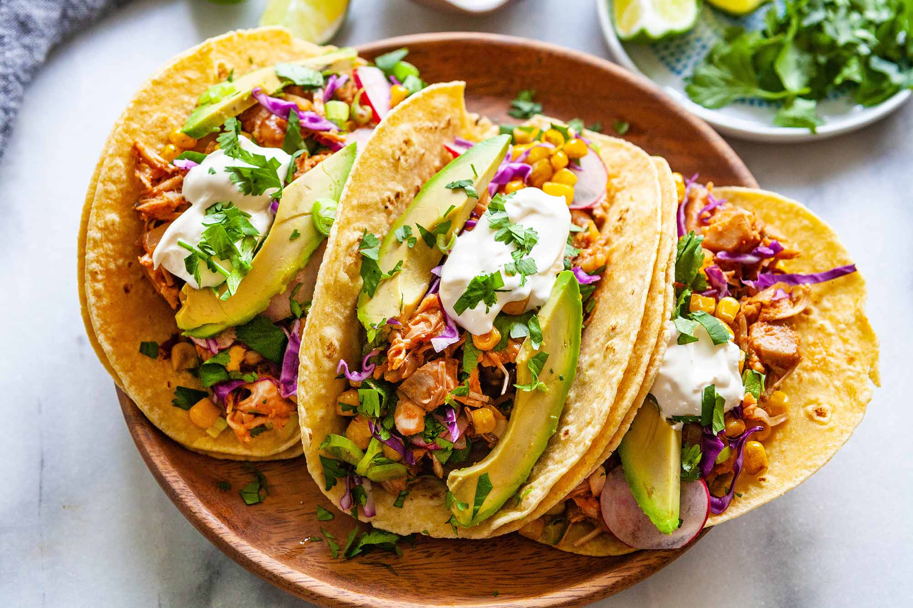

Hot roll
Ingredientes
- Água gelada até dar o ponto
- 30g de açúcar
- 90g de farinha de trigo
- 5g sal
Para a massa
- Para o rolo (maki)
- 125 g Gohan (Arroz para sushi)
- 1 folha alga nori, no Sushi Nogue cortamos a alga no meio, pois achamos mais fácil de empanar e fritar
- 1 fatia salmão, aproximadamente 40g
- 1 fatia creamcheese, fatia comprida cebolinha a gosto molho tare de shoyu doce
Para empanar e fritar
- farinha panko
- óleo para fritar
Modo de preparo
- Prepare o rolo
- Passe na massa
- Empane na farinha Panko
- Frite em óleo bem quente
- Retire quando dourar bem e escorra em papel toalha sem abafar para manter crocante
- Corte cada metade em 6
Acarajé
Ingredientes
- 1 kg de feijão fradinho
- 4 cebola picadas
- Sal a gosto
- Azeite de dendê a gosto
Molho
- Pimenta malagueta
- Azeite dendê
- 100 g de camarão
Modo de preparo
- Bata o feijão seco só para quebrar no liquidificador
- oloque de molho em bastante água, por mais ou menos 1 hora e meia para soltar a casca e os pontinhos pretos
- Mude sempre a água e tire a casca e os pontinhos pretos que ficam boiando, escorra a água
- Bata no liquidificador o feijão com as cebolas e o sal
- Se precisar, ponha um pouco de água para bater melhor
- Coloque a massa em uma vasilha e bata bem para ficar bem macia
- Para bater use uma colher de pau
- Acrescente dendê em uma frigideira para esquentar bem
- Com uma colher pegue a massa e coloque para fritar
- Depois de frito coloque-os em uma vasilha forrada com papel absorvente
Molho
- Machuque umas pimentas malaguetas
- Ponha um pouco de dendê para esquentar e frite um pouco as pimentas machucadas
- Acrescente o camarão e frite um pouco mais, tire do fogo e misture com um pouco de vatapá
Tacos mexicanos

Ingredientes
Massa
- 300 g de farinha de milho em flocos
- 2 xícaras (chá) rasas de água (400 ml)
- 2 colheres (sopa) de margarina
- 2 colheres (sopa) de amido de milho
- 2 colheres (café) de sal
- Banha (gordura de porco) para untar
Recheio de carne moída
- 250 g de carne bovina moída
- 1 colher (sopa) de óleo
- 1 pimentão verde picadinho
- 1 cebola média picada
- 3 dentes de alho picadinhos ou espremidos
- Sal e pimenta vermelha a gosto
- Alface, cebola e tomate para guarnecer
Modo de preparo
- Massa
- Dissolva a farinha de milho na água
- Acrescente os ingredientes restantes e amasse bem
- Abra a massa com o rolo entre 2 plásticos e corte discos (ou modele bolinhas e abra uma a uma)
- Disponha em assadeira untada com banha
- Leve ao forno médio preaquecido (180 ºC) por cerca de 20 minutos ou até dourarem
- Recheie, guarneça, dobre ao meio levemente e sirva
Recheio de carne moída
- Refogue a carne com todos os ingredientes e bata no liquidificador ou processador para ficar cremoso. Utilize.